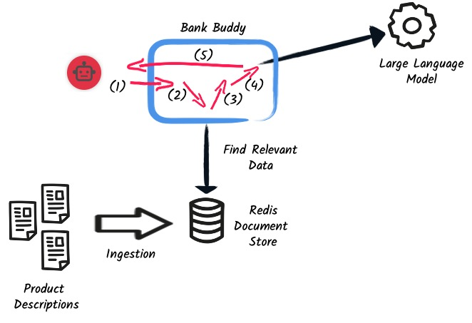

Slot 2: Augmented Generation - Extending Hosted LLMs with Local Documents#
In this section, we will:
- Shift gears: Explore another LLM and extend its capabilities using local documents.
- Retrieval Augmented Generation: Delve into one of the core patterns in AI usage, understanding the synergy between your data and LLM interactions.

We are going to build a chatbot that will use a pre-trained LLM (llama2) to generate responses. We will then extend the LLM with local documents to improve the quality of the responses.
Running LLAMA2 locally#
In the previous slot, we used the OpenAI GPT model. The model is running remotely. It can become a security concern if you want to use the model for sensitive data, especially when using local documents to extend the knowledge of the LLM. Thus, here, we will run the model locally.
If for any reason, you are not able to run the model locally, you can use a hosted LLAMA2 model. Jump to the Using a hosted LLama 2 model section.
Installing LLAMA2#
If not already done, install LLAMA2 use ollama following the instructions discribed in the appendix).
Once installed with Ollama up and running, you should have access to the ollama command line tool:
Ollama can run multiple models, as you can see on ollama’s library.
We will use the llama2 model, which is a GPT-2 model trained on a large corpus of text.
Pull the model using:
Warning
The LLAMA2 model is quite large (> 3.8GB). Make sure you have enough disk space.
Once pulled, we will be able to use it.
Using a hosted LLama 2 model#
If you are not able to run the model locally, you can use a hosted LLAMA2 model. To do so, you need to:
- Define the Hugging Face API key provided in the companion document:
- Then, in the rest of the section, you will use the
chat-application-hugging-facedirectory instead of thechat-applicationdirectory. It uses a hugging face inference point providing the LLama2 model. The configuration and dependencies are slightly different from the ones described in the rest of the section.
The Chat Application#
As mentioned above, we will build a chatbot.
Navigate to the chat-application directory to see the full source code of the application.
All the paths in the rest of this document are related to that directory.
Using LLAMA2#
Open the pom.xml file and check that you have the following dependencies:
<dependency>
<groupId>io.quarkus</groupId>
<artifactId>quarkus-resteasy-reactive-jackson</artifactId>
</dependency>
<dependency>
<groupId>io.quarkus</groupId>
<artifactId>quarkus-websockets</artifactId>
</dependency>
<dependency>
<groupId>io.quarkiverse.langchain4j</groupId>
<artifactId>quarkus-langchain4j-ollama</artifactId>
<version>${quarkus-langchain.version}</version>
</dependency>
The first dependency is the RESTEasy Reactive Jackson extension. The second dependency is used to add the WebSocket support, as the UI will use the WebSocket protocol to communicate with the application.
Finally, the last dependency adds support for Ollama.
In the src/main/resources/application.properties file, we have the following configuration:
The first property is used to specify the model to use.
In our case, we will use the llama2 model.
The second property configures the timeout for the model.
Logging the request and response
If you want to visualise the request that is sent to the model and its response, you cam increase the log level by adding the following properties to the src/main/resources/application.properties file:
Alright, it’s time to implement the chatbot part.
Implementing the Chat Bot#
The chat bot is composed of two parts:
- the AI service, which will generate the response
- the WebSocket endpoint, which will handle communication with the UI
The AI Service#
The AI service is located in the io.quarkiverse.langchain4j.workshop.chat.ChatService class:
package io.quarkiverse.langchain4j.workshop.chat;
import dev.langchain4j.service.MemoryId;
import dev.langchain4j.service.SystemMessage;
import dev.langchain4j.service.UserMessage;
import io.quarkiverse.langchain4j.RegisterAiService;
import jakarta.inject.Singleton;
@RegisterAiService
@Singleton
public interface ChatService {
@SystemMessage("<<SYS>>You are a chat bot answering customer requests about bank products.<</SYS>>")
@UserMessage("""
Answer the customer request. The answer must be polite and relevant to the question.
When you don't know, respond that you don't know the answer, and the bank will contact the customer directly.
+++
{message}
+++
""")
String chat(@MemoryId Object session, String message);
}
The ChatService interface is annotated with @RegisterAiService to indicate that it is an AI service.
The @Singleton annotation is used to indicate that the service is a singleton.
This is required when used from a WebSocket.
It contains a single method, chat, which is annotated with @SystemMessage and @UserMessage.
The system message is wrapped into <<SYS>> and <<\SYS>>.
This is a requirement from the LLAMA2 model.
The user message is a template that will be used to generate the response.
The +++ and +++ are used to delimit the message from the user.
Also note the {message} placeholder.
It is replaced with the user message received as a parameter.
Handling the State of the Conversation#
When interacting with a chat bot, we do not want to lose the context of the conversation. However, the LLM does not store the context of the conversation; it is stateless.
Thus, we need to send the context of the conversation to the LLM every time we send a message. The context is a set of messages exchanged between the user and the chat bot.
As you may have noticed, the chat method also receives a session parameter (which will be the WebSocket connection).
The parameter is annotated with @MemoryId, indicating that this object will be used to store the state of the conversation.
We need to provide a CDI bean implementing the ChatMemoryProvider interface:
package io.quarkiverse.langchain4j.workshop.chat;
import dev.langchain4j.memory.ChatMemory;
import dev.langchain4j.memory.chat.ChatMemoryProvider;
import dev.langchain4j.memory.chat.MessageWindowChatMemory;
import jakarta.enterprise.context.ApplicationScoped;
import java.util.Map;
import java.util.concurrent.ConcurrentHashMap;
@ApplicationScoped
public class ChatMemoryBean implements ChatMemoryProvider {
private final Map<Object, ChatMemory> memories = new ConcurrentHashMap<>();
@Override
public ChatMemory get(Object memoryId) {
return memories.computeIfAbsent(memoryId, id -> MessageWindowChatMemory.builder()
.maxMessages(20)
.id(memoryId)
.build());
}
public void clear(Object session) {
memories.remove(session);
}
}
Info
Because we have a single ChatMemoryProvider, we do not have to configure anything.
When you have multiple ones, you can configure the one to use with the chatMemoryProvider attribute of the @RegisterAiService annotation.
For each memory id, we create and retrieve a ChatMemory object.
This object is used to store the context of the conversation for that specific memory id.
In the code above, we only store 20 messages.
Note that the bigger this context, the slower the response time.
Even 20 can be too much.
The clear method is used to remove the memory when the WebSocket connection is closed.
That’s what we are going to see now.
The WebSocket Endpoint#
The second part is the WebSocket endpoint:
package io.quarkiverse.langchain4j.workshop.chat;
import io.smallrye.mutiny.infrastructure.Infrastructure;
import jakarta.enterprise.context.control.ActivateRequestContext;
import jakarta.inject.Inject;
import jakarta.websocket.*;
import jakarta.websocket.server.ServerEndpoint;
import java.io.IOException;
@ServerEndpoint("/chatbot")
public class ChatBotWebSocket {
@Inject
ChatService chat;
@Inject
ChatMemoryBean chatMemoryBean;
@OnClose
void onClose(Session session) {
chatMemoryBean.clear(session);
}
@OnMessage
public void onMessage(String message, Session session) {
Infrastructure.getDefaultExecutor().execute(() -> {
String response = chat.chat(session, message);
try {
session.getBasicRemote().sendText(response);
} catch (IOException e) {
throw new RuntimeException(e);
}
});
}
}
It is annotated with @ServerEndpoint to indicate that it is a WebSocket endpoint.
The endpoint is available at the /chatbot path, so you can connect to the WebSocket using ws://localhost:8080/chatbot.
Tip
You can check if the port 8080 is already used by another process with the command lsof -i tcp:8080.
The ChatBotWebSocket bean receives the ChatService as well as the ChatMemoryBean bean.
The onClose method is called when the WebSocket connection is closed.
It is used to remove the memory associated with the session.
The onMessage method is called when a message is received.
It uses the ChatService to generate the response and sends it back to the client.
Bug
Due to a Quarkus WebSocket limitation, we need to use Infrastructure.getDefaultExecutor().execute to execute the code in a different thread; otherwise, the WebSocket connection will block the event loop.
The Frontend#
The frontend is located in the src/main/resources/META-INF/resources/index.html file.
Nothing very fancy.
Start the application using:
Then, open your browser at http://localhost:8080 and click on the chat bot link (bottom right). You can start chatting with the bot. If you ask questions about the products offered by the bank, the bot will answer. But how does it get this knowledge? That’s what we are going to see next.
Extending the LLM with Local Documents#
In this section, we will extend the LLM with local documents describing the bank products. This is a two-steps process:
- Ingest the documents into the vector database.
- Find the relevant document and attach them to the user message (sent to the LLM).
The second step is called retrieval augmented generation (RAG).
Ingesting Documents#
The first step is to ingest the documents into the vector database. The vector database is a database used to store the documents and their vector representation. Vectors allow semantic querying of the documents, for example, to find semantically relevant documents.
To the ingestion consists of reading documents and computing a vector representation for each of them. This representation is called an embedding. Then, the vector and the document are stored into the vector database.
In this application, we use Redis as a vector database.
The pom.xml file contains the following dependency:
<dependency>
<groupId>io.quarkiverse.langchain4j</groupId>
<artifactId>quarkus-langchain4j-redis</artifactId>
<version>${quarkus-langchain.version}</version>
</dependency>
Info
Quarkus also supports Chroma and PostgreSQL as a vector database.
The ingestion process is implemented in the DocumentIngestor class:
package io.quarkiverse.langchain4j.workshop.chat;
import dev.langchain4j.data.document.Document;
import dev.langchain4j.data.document.loader.FileSystemDocumentLoader;
import dev.langchain4j.data.document.parser.TextDocumentParser;
import dev.langchain4j.model.embedding.EmbeddingModel;
import dev.langchain4j.store.embedding.EmbeddingStoreIngestor;
import io.quarkiverse.langchain4j.redis.RedisEmbeddingStore;
import io.quarkus.runtime.StartupEvent;
import jakarta.enterprise.context.ApplicationScoped;
import jakarta.enterprise.event.Observes;
import jakarta.inject.Inject;
import java.io.File;
import java.util.List;
import static dev.langchain4j.data.document.splitter.DocumentSplitters.recursive;
@ApplicationScoped
public class DocumentIngestor {
/**
* The embedding store (the database).
* The bean is provided by the quarkus-langchain4j-redis extension.
*/
@Inject
RedisEmbeddingStore store;
/**
* The embedding model (how the vector of a document is computed).
* The bean is provided by the LLM (like openai) extension.
*/
@Inject
EmbeddingModel embeddingModel;
public void ingest(@Observes StartupEvent event) {
System.out.printf("Ingesting documents...%n");
List<Document> documents
= FileSystemDocumentLoader.loadDocuments(new File("src/main/resources/catalog").toPath(), new TextDocumentParser());
var ingestor = EmbeddingStoreIngestor.builder()
.embeddingStore(store)
.embeddingModel(embeddingModel)
.documentSplitter(recursive(500, 0))
.build();
ingestor.ingest(documents);
System.out.printf("Ingested %d documents.%n", documents.size());
}
}
The ingest method is called when the application starts.
It uses the FileSystemDocumentLoader to load the documents from the src/main/resources/catalog directory.
Then, it uses the EmbeddingStoreIngestor to ingest the documents into the vector database.
The ingestor computes the embedding but also splits the document into smaller chunks. This is required to improve the performance (and reduce the size of the relevant data attached to the user request) of the retrieval process.
Tip
You do not have to use the embedding model provided by the LLM extension. You can also use a local model. It is recommended to use a local model when using a remote LLM to avoid having to send the full content to the remote LLM.
In this example, we ingest documents during the application startup. However, it can be a dynamic process, ingesting documents on the fly. In general, the ingestion and the retrieval processes are decoupled into two different applications.
Implementing the RAG Pattern#
Let’s implement the second step.
The RAG pattern is implemented in the DocumentRetriever class:
package io.quarkiverse.langchain4j.workshop.chat;
import dev.langchain4j.data.segment.TextSegment;
import dev.langchain4j.model.embedding.EmbeddingModel;
import dev.langchain4j.retriever.EmbeddingStoreRetriever;
import dev.langchain4j.retriever.Retriever;
import io.quarkiverse.langchain4j.redis.RedisEmbeddingStore;
import jakarta.enterprise.context.ApplicationScoped;
import java.util.List;
@ApplicationScoped
public class DocumentRetriever implements Retriever<TextSegment> {
private final EmbeddingStoreRetriever retriever;
DocumentRetriever(RedisEmbeddingStore store, EmbeddingModel model) {
retriever = EmbeddingStoreRetriever.from(store, model, 5);
}
@Override
public List<TextSegment> findRelevant(String s) {
return retriever.findRelevant(s);
}
}
This class is a bean implementing the Retriever interface.
Because we have only one Retriever bean, we do not have to configure anything.
When you have multiple ones, you can configure the one to use with the retriever attribute of the @RegisterAiService annotation.
The retriever is configured with the vector database and the embedding model.
Then, when the user sends a request, the findRelevant method is called to find all the semantically relevant chunks of data.
The chunks are then attached to the user message and sent to the LLM.
To find the relevant chunks, the retriever computes the vector representation of the user query and asks the database to provide the most relevant chunks.
You do not have to do anything about the attachment of the chunks to the user message; it is done automatically by the LLM extension.
Summary#
That concludes the second slot of the workshop. We have seen how to use a local (or hosted) LLM (LLAMA2) to build a chat bot. We have also looked into the ingestion and RAG patterns to extend the LLM with local documents.